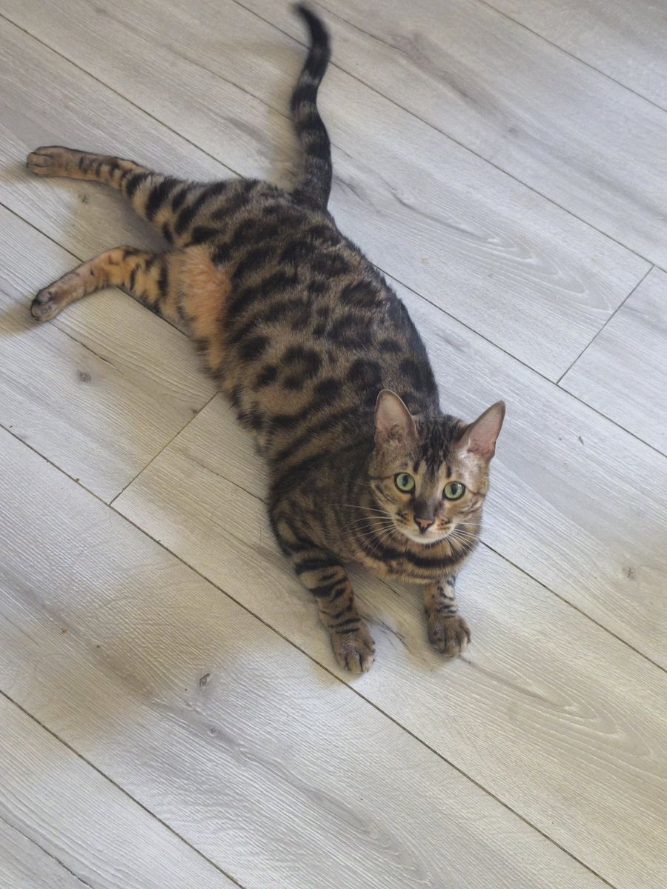
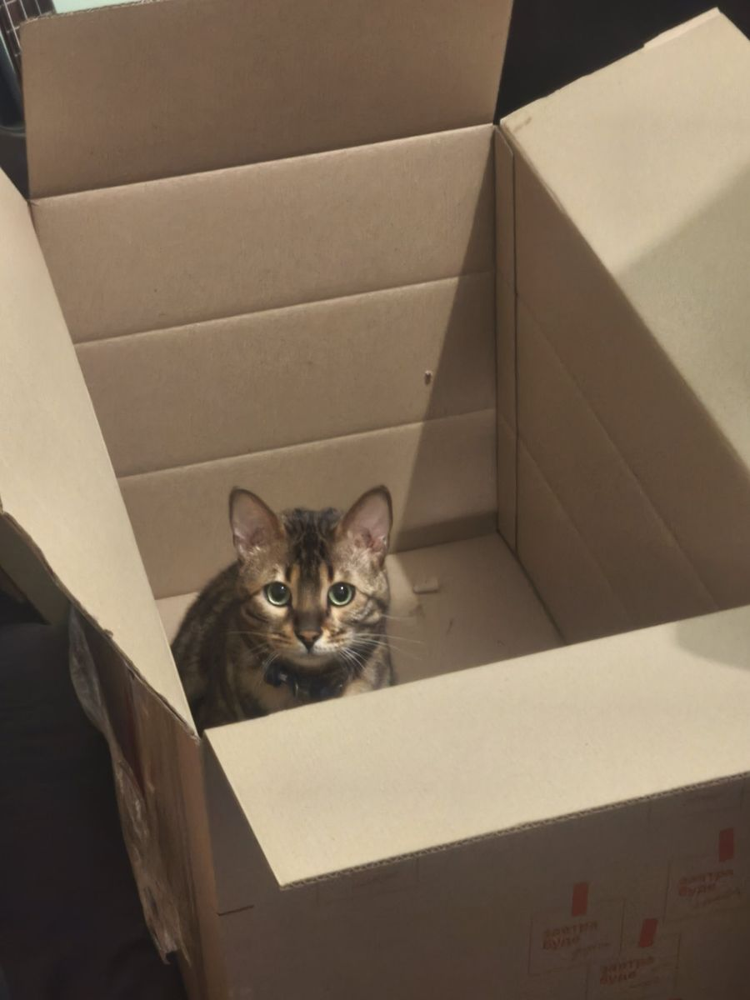
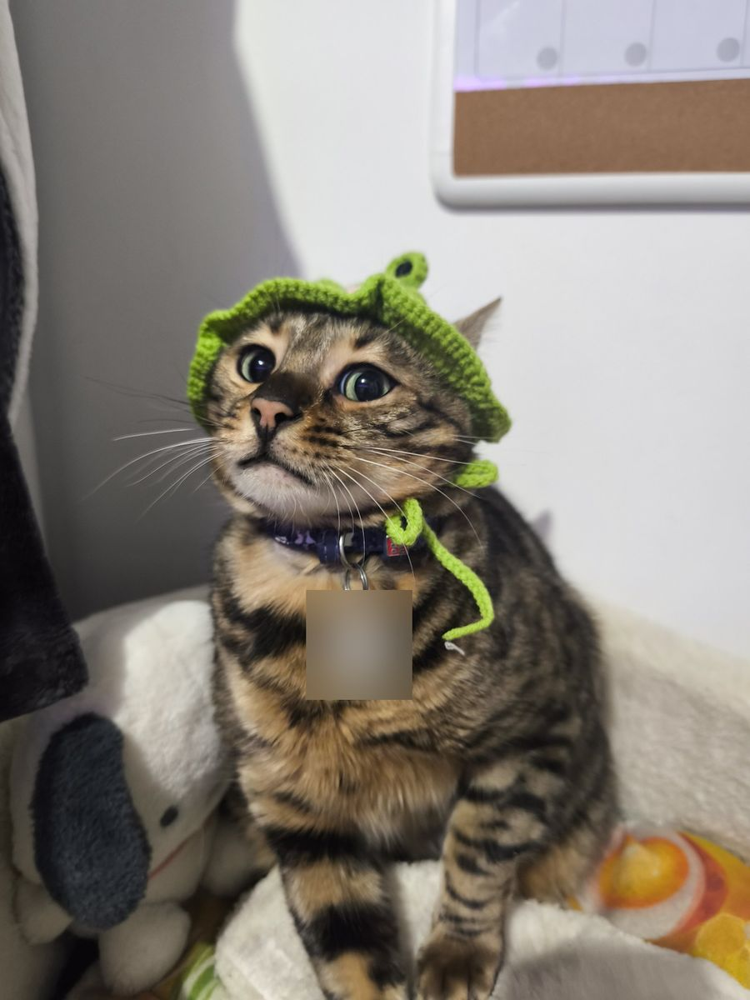
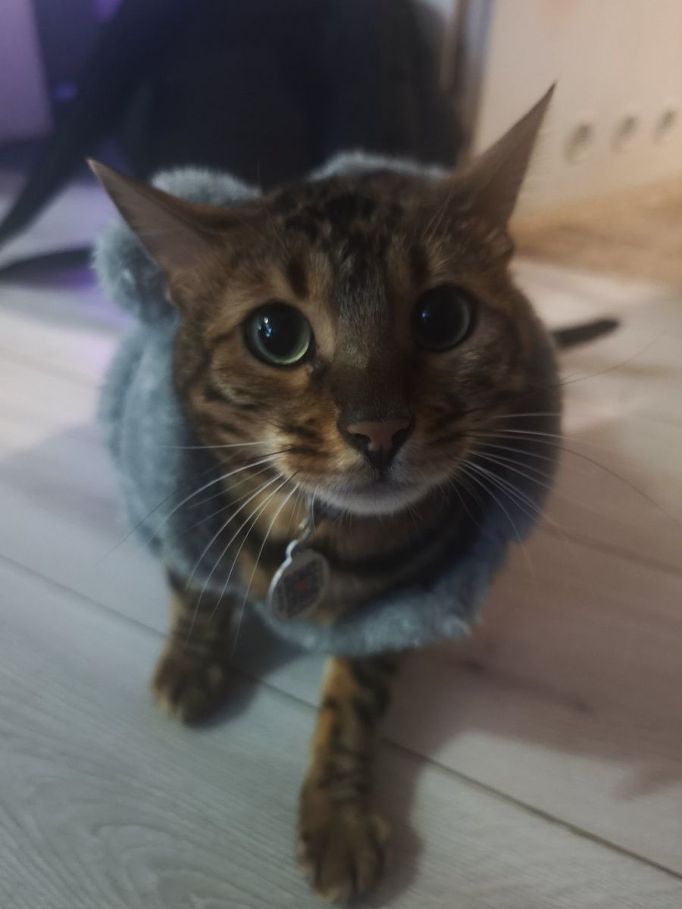
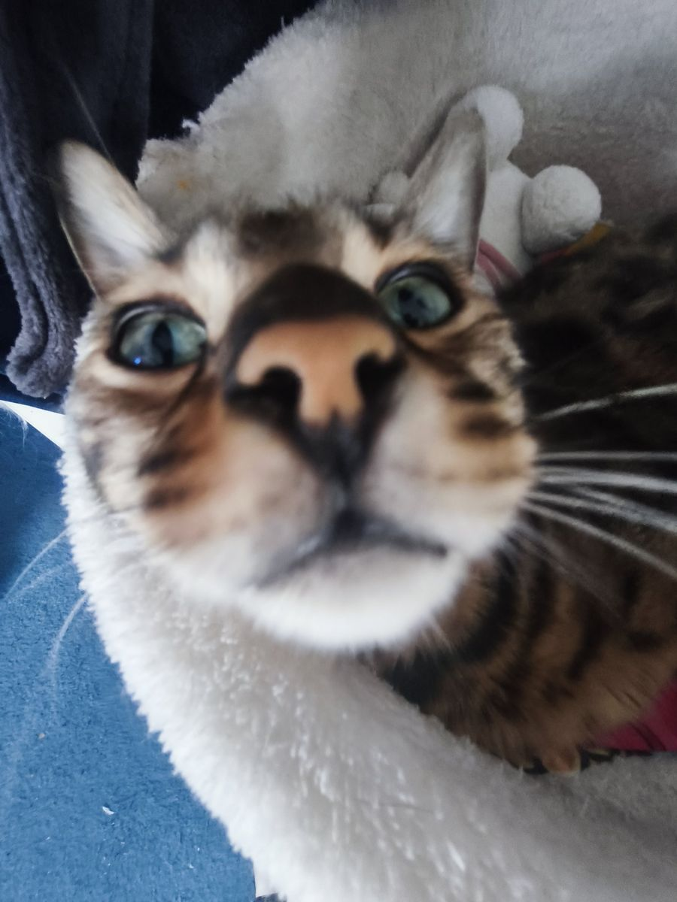
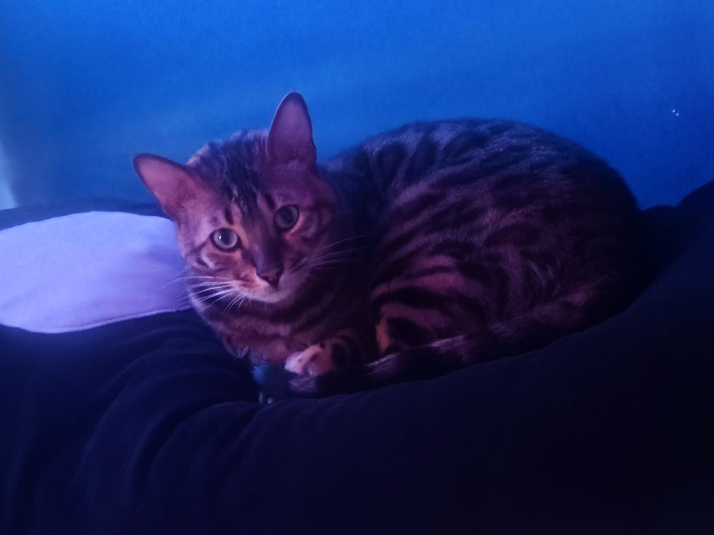

Meet Mika: Life With a Bengal Cat
Mika is a spotted Bengal cat with more energy than the rest of the house put together. This site is about him, and about what living with a Bengal is really like.

Who Is Mika?
Mika is a Bengal: a breed known for its wild-looking spotted coat and its very active, curious character. He lives with three other cats, but he is the one who climbs highest, runs fastest and asks for attention the loudest.
If you want to know where Bengals come from and what makes them different from other cats, read the guide to the Bengal cat breed.
What a Day With a Bengal Looks Like
Morning: Mika is awake before everyone else and makes sure everyone knows it.
Day: Running, climbing, chasing toys, checking every bag and box in the house.
Evening: One more round of play, then finally a nap close to his people.
Mika in Photos






What I Learned Living With Mika
- Bengals need to play every day. A bored Bengal will find its own entertainment, and you might not like it.
- Height matters. A tall cat tree or shelves on the wall make a Bengal much happier.
- They are smart. Puzzle feeders and new toys keep him busy and calm.
- They talk. Mika has a different sound for every request.